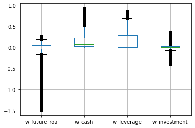
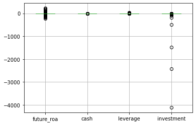
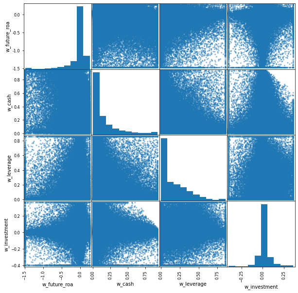

# Import packages
import pandas as pd
import numpy as np
import statsmodels.api as smL17: Panel regression intro
Preliminaries
Lecture overview
To make the concepts in these lecture notes (and the next) more concrete, we will apply them to the empirical analysis of whether firm profitability is predictable. To be more specific, we will ask:
Which of the following firm characteristics (if any) have statistically significant predictive power over firms’ profitability: the firm’s cash holdings, its book leverage or its capital investments?
In this lecture, we will start by collecting the data we need for this analysis and producing some key descriptive statistics of the data. We will then perform a regression analysis where firm future profitability is the dependent variable, and firm cash holdings, book leverage,and investment are the explanatory variables. In this lecture, we will showcase some common practical issues that one needs to be aware of any time they run a regression: 1. The effect of outliers on our regression results 2. The difference between economic magnitude and statistical significance 3. Multicollinearity (highly correlated independent variables)
In the following lecture, we will continue this analysis by tackling two other very common issues with regression analysis: 1. The potential presence of “fixed-effects” in the data 2. The issue of correlated error terms in the regression
The data
The first step in our analysis is to decide exactly what data we will use to try to answer this question. 1. We will use the Compustat dataset as raw data (the “compa.zip” file in the “data” folder).
We then have to be explicit about exactly how each variable in the analysis will be calculated: 1. Dependent variable: - roa = net income before extraordinary items (ib) divided by total assets (at)
- Independent variables:
- cash holdings = cash and cash equivalents (
che) divided by total assets - book leverage = long-term debt (
dltt) divided by total assets - capital expenditures = change in net PP&E (
ppent) divided by total assets
- cash holdings = cash and cash equivalents (
Note that all the variables are scaled by some measure of size (total assets). This is to ensure that our regression results are not dominated by large firms. It also helps avoid heteroskedasticity problems (the dollar-amount data for large firms is much more volatile than the data for small firms).
# Load the cleaned compa data, keeping only what we need
comp = pd.read_pickle('../data/compa.zip')
comp = comp.loc[comp['at']>0, ['permno','datadate','ib','at','che','dltt','ppent','sich']].copy()
comp = comp.sort_values(['permno','datadate'])
comp.dtypespermno float64
datadate object
ib float64
at float64
che float64
dltt float64
ppent float64
sich float64
dtype: object# Create main variables
comp['year'] = pd.to_datetime(comp['datadate']).dt.year
comp['roa'] = comp['ib'] / comp['at']
comp['future_roa'] = comp.groupby('permno')['roa'].shift(-1)
comp['cash'] = comp['che'] / comp['at']
comp['leverage'] = comp['dltt'] / comp['at']
comp['investment'] = comp.groupby('permno')['ppent'].diff() / comp['at']
main_vars = ['future_roa','cash','leverage','investment']# Winsorize main variables at the 1 and 99 percentiles
main_vars_wins = []
for v in main_vars:
comp[f'w_{v}'] = comp[v].clip(lower=comp[v].quantile(0.01), upper=comp[v].quantile(0.99))
main_vars_wins = main_vars_wins + [f'w_{v}']# Add a constant and save the data for next time
comp['const'] = 1
comp.to_pickle('../data/comp_clean.zip')Descriptive statistics
Summarize the main variables, both winsorized and unwinsorized:
comp[main_vars_wins].describe()| w_future_roa | w_cash | w_leverage | w_investment | |
|---|---|---|---|---|
| count | 212955.000000 | 236417.000000 | 235969.000000 | 207458.000000 |
| mean | -0.044766 | 0.174446 | 0.176818 | 0.014380 |
| std | 0.254165 | 0.218750 | 0.195127 | 0.089620 |
| min | -1.482391 | 0.000181 | 0.000000 | -0.400194 |
| 25% | -0.029755 | 0.025310 | 0.008017 | -0.006815 |
| 50% | 0.019406 | 0.080652 | 0.112543 | 0.003152 |
| 75% | 0.061315 | 0.234988 | 0.287561 | 0.033348 |
| max | 0.264823 | 0.930186 | 0.855270 | 0.361891 |
comp[main_vars].describe()| future_roa | cash | leverage | investment | |
|---|---|---|---|---|
| count | 212955.000000 | 236417.000000 | 235969.000000 | 207458.000000 |
| mean | -0.054115 | 0.174782 | 0.180717 | -0.035447 |
| std | 1.568233 | 0.219955 | 0.248598 | 11.025308 |
| min | -218.000000 | -0.069190 | 0.000000 | -4110.714102 |
| 25% | -0.029755 | 0.025310 | 0.008017 | -0.006815 |
| 50% | 0.019406 | 0.080652 | 0.112543 | 0.003152 |
| 75% | 0.061315 | 0.234988 | 0.287561 | 0.033348 |
| max | 226.310379 | 1.000000 | 39.592899 | 0.999933 |
comp[main_vars_wins].boxplot();
comp[main_vars].boxplot();
Check correlations:
comp[main_vars_wins].corr()| w_future_roa | w_cash | w_leverage | w_investment | |
|---|---|---|---|---|
| w_future_roa | 1.000000 | -0.324233 | 0.063734 | 0.076357 |
| w_cash | -0.324233 | 1.000000 | -0.315295 | -0.070145 |
| w_leverage | 0.063734 | -0.315295 | 1.000000 | 0.074024 |
| w_investment | 0.076357 | -0.070145 | 0.074024 | 1.000000 |
We can take a look at pairwise scatter plots (to visualize these correlations) using pd.plotting.scatter_matrix():
pd.plotting.scatter_matrix(comp[main_vars_wins], figsize=(10,10));
These plots help us realize that point-statistics (single numbers) like the correlation between profitability and cash holdings may mask how rich the data truly is and make us believe that patterns in the data (the -0.32 correlation seems quite strong) are more robust than they really are. Always look at your data (plot it). Just make sure you do it after you mitigate the effect of outliers or the images will look very distorted.
Linear regression
Let’s use the non-winsorized data first for our baseline regression:
# Using non-winsorized data
results_base = sm.OLS(endog = comp['future_roa'],
exog = comp[['const','cash','leverage','investment']],
missing = 'drop').fit()
print(results_base.summary()) OLS Regression Results
==============================================================================
Dep. Variable: future_roa R-squared: 0.001
Model: OLS Adj. R-squared: 0.001
Method: Least Squares F-statistic: 65.43
Date: Fri, 25 Feb 2022 Prob (F-statistic): 2.82e-42
Time: 14:32:28 Log-Likelihood: -3.4663e+05
No. Observations: 185315 AIC: 6.933e+05
Df Residuals: 185311 BIC: 6.933e+05
Df Model: 3
Covariance Type: nonrobust
==============================================================================
coef std err t P>|t| [0.025 0.975]
------------------------------------------------------------------------------
const 0.0144 0.006 2.327 0.020 0.002 0.027
cash -0.2424 0.018 -13.340 0.000 -0.278 -0.207
leverage -0.1111 0.018 -6.133 0.000 -0.147 -0.076
investment -0.0013 0.000 -3.528 0.000 -0.002 -0.001
==============================================================================
Omnibus: 560269.038 Durbin-Watson: 0.913
Prob(Omnibus): 0.000 Jarque-Bera (JB): 887102384117.364
Skew: 43.457 Prob(JB): 0.00
Kurtosis: 10721.226 Cond. No. 55.6
==============================================================================
Notes:
[1] Standard Errors assume that the covariance matrix of the errors is correctly specified.The effect of outliers
Now let’s use the winsorized variables and look at the difference. Check the coefficient on the investment variable in particular.
# Using winsorized data
results_wins = sm.OLS(endog = comp['w_future_roa'],
exog = comp[['const','w_cash','w_leverage','w_investment']],
missing = 'drop').fit()
print(results_wins.summary()) OLS Regression Results
==============================================================================
Dep. Variable: w_future_roa R-squared: 0.096
Model: OLS Adj. R-squared: 0.096
Method: Least Squares F-statistic: 6524.
Date: Fri, 25 Feb 2022 Prob (F-statistic): 0.00
Time: 14:32:28 Log-Likelihood: 5498.7
No. Observations: 185315 AIC: -1.099e+04
Df Residuals: 185311 BIC: -1.095e+04
Df Model: 3
Covariance Type: nonrobust
================================================================================
coef std err t P>|t| [0.025 0.975]
--------------------------------------------------------------------------------
const 0.0314 0.001 32.312 0.000 0.030 0.033
w_cash -0.3712 0.003 -134.431 0.000 -0.377 -0.366
w_leverage -0.0727 0.003 -23.971 0.000 -0.079 -0.067
w_investment 0.1634 0.006 25.736 0.000 0.151 0.176
==============================================================================
Omnibus: 126392.896 Durbin-Watson: 1.015
Prob(Omnibus): 0.000 Jarque-Bera (JB): 1848286.569
Skew: -3.171 Prob(JB): 0.00
Kurtosis: 17.112 Cond. No. 12.0
==============================================================================
Notes:
[1] Standard Errors assume that the covariance matrix of the errors is correctly specified.Economic significance vs statistical significance
It is easy to use the results in the regression output above and decide (based on p-values or t-statistics) if the independent variables have a statistically significant relation with the dependent variable. But it is not clear if there relations are large or small in magnitude (does investment have a large impact on future profitability? larger than leverage?). That is what we mean by economically significant.
To help ease the interpretation of these economic magnitudes, we generally standardize all the variables in the regression by subtracting their mean and dividing by their standard deviation (see below). After doing this, the regression coefficient on any independent variable X, will tell us by how many standard deviations we expect the dependent variable Y to move, when the X variable changes by one standard deviation.
So after the normalization, the X variables with larger coefficients have a larger economic impact on the Y variable.
# Create list of names we want to give to the normalized varsions of these variables
normalized_vars = ['n_' + x for x in main_vars]
normalized_vars['n_future_roa', 'n_cash', 'n_leverage', 'n_investment']# Create normalized variables
comp[normalized_vars] = (comp[main_vars_wins] - comp[main_vars_wins].mean()) / comp[main_vars_wins].std()# Check that all means are 0 and all std deviations are 1
comp[normalized_vars].describe()| n_future_roa | n_cash | n_leverage | n_investment | |
|---|---|---|---|---|
| count | 2.129550e+05 | 2.364170e+05 | 2.359690e+05 | 2.074580e+05 |
| mean | 4.288606e-15 | -1.581191e-14 | -2.359298e-14 | 2.044987e-15 |
| std | 1.000000e+00 | 1.000000e+00 | 1.000000e+00 | 1.000000e+00 |
| min | -5.656264e+00 | -7.966420e-01 | -9.061689e-01 | -4.625934e+00 |
| 25% | 5.906184e-02 | -6.817643e-01 | -8.650839e-01 | -2.364965e-01 |
| 50% | 2.524840e-01 | -4.287752e-01 | -3.294019e-01 | -1.252835e-01 |
| 75% | 4.173736e-01 | 2.767601e-01 | 5.675461e-01 | 2.116544e-01 |
| max | 1.218065e+00 | 3.454800e+00 | 3.476980e+00 | 3.877626e+00 |
# Using winsorized, then normalized data
results_norm = sm.OLS(endog = comp['n_future_roa'],
exog = comp[['const','n_cash','n_leverage','n_investment']],
missing = 'drop').fit()
print(results_norm.summary()) OLS Regression Results
==============================================================================
Dep. Variable: n_future_roa R-squared: 0.096
Model: OLS Adj. R-squared: 0.096
Method: Least Squares F-statistic: 6524.
Date: Fri, 25 Feb 2022 Prob (F-statistic): 0.00
Time: 14:32:28 Log-Likelihood: -2.4834e+05
No. Observations: 185315 AIC: 4.967e+05
Df Residuals: 185311 BIC: 4.967e+05
Df Model: 3
Covariance Type: nonrobust
================================================================================
coef std err t P>|t| [0.025 0.975]
--------------------------------------------------------------------------------
const 0.0037 0.002 1.737 0.082 -0.000 0.008
n_cash -0.3195 0.002 -134.431 0.000 -0.324 -0.315
n_leverage -0.0558 0.002 -23.971 0.000 -0.060 -0.051
n_investment 0.0576 0.002 25.736 0.000 0.053 0.062
==============================================================================
Omnibus: 126392.896 Durbin-Watson: 1.015
Prob(Omnibus): 0.000 Jarque-Bera (JB): 1848286.569
Skew: -3.171 Prob(JB): 0.00
Kurtosis: 17.112 Cond. No. 1.40
==============================================================================
Notes:
[1] Standard Errors assume that the covariance matrix of the errors is correctly specified.Multicollinearity
One common way that multicollinearity arises when two or more of your independent variables (X) are very highly correlated (close to 1). The usual way to deal with this issue, is to calculate the correlation matrix between all the variables in your study, to identify which group of variables are highly correlated with each other. Then we simply drop all but one of them from the analysis.
Below, we artificially create this problem in our example application, by introducing in our regression a variable that equals the leverage variable times 100. This will have a correlation of 1 with the leverage variable. However, as we’ll see below, “statsmodels” will NOT give us an error. So it’s up to us to make sure that we don’t have this problem in our data by always looking at the correlation matrix of our data.
# Add variable that is collinear with size
comp['lev100'] = comp['n_leverage']*100# Run regression with multicollinearity problem
X = comp[['const','n_cash','n_leverage','n_investment','lev100']]
results_mc = sm.OLS(comp['n_future_roa'],X,missing = 'drop').fit()
print(results_mc.summary()) OLS Regression Results
==============================================================================
Dep. Variable: n_future_roa R-squared: 0.096
Model: OLS Adj. R-squared: 0.096
Method: Least Squares F-statistic: 6524.
Date: Fri, 25 Feb 2022 Prob (F-statistic): 0.00
Time: 14:32:28 Log-Likelihood: -2.4834e+05
No. Observations: 185315 AIC: 4.967e+05
Df Residuals: 185311 BIC: 4.967e+05
Df Model: 3
Covariance Type: nonrobust
================================================================================
coef std err t P>|t| [0.025 0.975]
--------------------------------------------------------------------------------
const 0.0037 0.002 1.737 0.082 -0.000 0.008
n_cash -0.3195 0.002 -134.431 0.000 -0.324 -0.315
n_leverage -5.583e-06 2.33e-07 -23.971 0.000 -6.04e-06 -5.13e-06
n_investment 0.0576 0.002 25.736 0.000 0.053 0.062
lev100 -0.0006 2.33e-05 -23.971 0.000 -0.001 -0.001
==============================================================================
Omnibus: 126392.896 Durbin-Watson: 1.015
Prob(Omnibus): 0.000 Jarque-Bera (JB): 1848286.569
Skew: -3.171 Prob(JB): 0.00
Kurtosis: 17.112 Cond. No. 2.61e+17
==============================================================================
Notes:
[1] Standard Errors assume that the covariance matrix of the errors is correctly specified.
[2] The smallest eigenvalue is 2.56e-26. This might indicate that there are
strong multicollinearity problems or that the design matrix is singular.Note how the coefficient on n_leverage has changed. Also, look at Notes [2] above.
# Check for correlations to see which which variable to drop
X.corr()| const | n_cash | n_leverage | n_investment | lev100 | |
|---|---|---|---|---|---|
| const | NaN | NaN | NaN | NaN | NaN |
| n_cash | NaN | 1.000000 | -0.315295 | -0.070145 | -0.315295 |
| n_leverage | NaN | -0.315295 | 1.000000 | 0.074024 | 1.000000 |
| n_investment | NaN | -0.070145 | 0.074024 | 1.000000 | 0.074024 |
| lev100 | NaN | -0.315295 | 1.000000 | 0.074024 | 1.000000 |
Multicollinearity can arise even if a “linear combination” (a weighted sum or difference) of our variables is highly correlated with some other variable in the regression. To see this in action, we will add to our explanatory variables, a variable called illiquid which measures the non-cash assets of the firm (divided by total assets). In this case, the sum of cash and illiquid will equal 1 at all times, which is equal to another explanatory variable in our regression: the constant term.
comp['illiquid'] = (comp['at'] - comp['che']) / comp['at']# Run regression with multicollinearity problem
X = comp[['const','cash','leverage','investment','illiquid']]
results_mc = sm.OLS(comp['future_roa'],X,missing = 'drop').fit()
print(results_mc.summary()) OLS Regression Results
==============================================================================
Dep. Variable: future_roa R-squared: 0.001
Model: OLS Adj. R-squared: 0.001
Method: Least Squares F-statistic: 65.43
Date: Fri, 25 Feb 2022 Prob (F-statistic): 2.82e-42
Time: 14:32:29 Log-Likelihood: -3.4663e+05
No. Observations: 185315 AIC: 6.933e+05
Df Residuals: 185311 BIC: 6.933e+05
Df Model: 3
Covariance Type: nonrobust
==============================================================================
coef std err t P>|t| [0.025 0.975]
------------------------------------------------------------------------------
const -0.0712 0.005 -15.175 0.000 -0.080 -0.062
cash -0.1568 0.011 -14.354 0.000 -0.178 -0.135
leverage -0.1111 0.018 -6.133 0.000 -0.147 -0.076
investment -0.0013 0.000 -3.528 0.000 -0.002 -0.001
illiquid 0.0856 0.008 11.360 0.000 0.071 0.100
==============================================================================
Omnibus: 560269.038 Durbin-Watson: 0.913
Prob(Omnibus): 0.000 Jarque-Bera (JB): 887102384117.364
Skew: 43.457 Prob(JB): 0.00
Kurtosis: 10721.226 Cond. No. 7.92e+16
==============================================================================
Notes:
[1] Standard Errors assume that the covariance matrix of the errors is correctly specified.
[2] The smallest eigenvalue is 2.74e-27. This might indicate that there are
strong multicollinearity problems or that the design matrix is singular.Again, we did not get an error, but the results above can not be trusted. To see this, you can check Notes [2] above, but you can also print out the correlation matrix.
X.corr()| const | cash | leverage | investment | illiquid | |
|---|---|---|---|---|---|
| const | NaN | NaN | NaN | NaN | NaN |
| cash | NaN | 1.000000 | -0.244805 | -0.013678 | -1.000000 |
| leverage | NaN | -0.244805 | 1.000000 | 0.000063 | 0.244805 |
| investment | NaN | -0.013678 | 0.000063 | 1.000000 | 0.013678 |
| illiquid | NaN | -1.000000 | 0.244805 | 0.013678 | 1.000000 |
thesum = comp['cash'] + comp['illiquid']
thesum188730 1.0
188550 1.0
188566 1.0
188567 1.0
188568 1.0
...
493016 1.0
493017 1.0
493020 1.0
493021 1.0
493024 1.0
Length: 237017, dtype: float64Again, dropping one of the problem variables (“cash” or “illiquid”) would solve our problem.